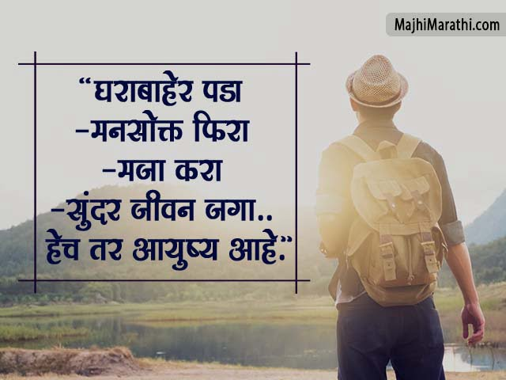
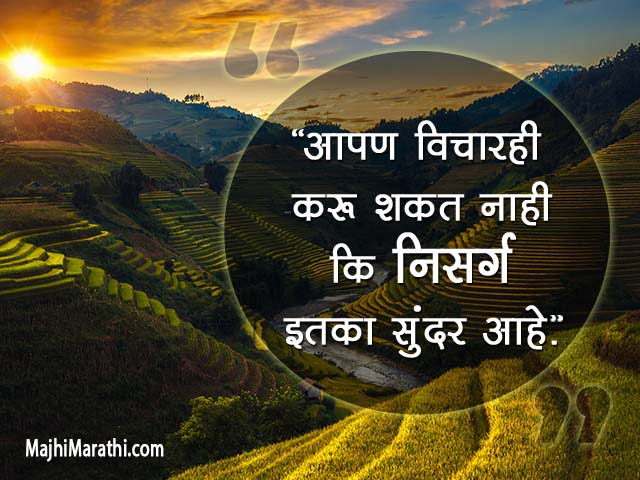

प्रवास हा आपल्या आयुष्याचा एक भाग आहे आणि प्रत्येक व्यक्ती आपल्या आयुष्यात नक्कीच प्रवास करत असते. प्रवासामुळे नवीन अनुभव, नवीन माणसे,
नवीन कल्पना, नवीन ऊर्जा, नवीन ताजेपणा इ. प्रवासाचे अनेक फायदे आहेत.
आपल्यापैकी काहीजण अजूनही प्रवासाला साहस म्हणून पाहतात, परंतु आपल्यापैकी अनेकांसाठी आपली साहसी भावना ही अशी गोष्ट आहे जी
आपण बालपणात मागे सोडतो. नवीन ठिकाणे एक्सप्लोर करण्याचे, झाडांवर चढण्याचे आणि ताऱ्यांखाली तळ ठोकण्याचे आमचे दिवस आयुष्यभर
पूर्वीसारखे वाटू शकतात. स्कूबा डायव्हिंग, स्काय डायव्हिंग, पॅराशूटिंग, राफ्टिंग, माउंटन क्लाइंबिंग आणि बरेच काही यासारख्या अत्यंत खेळांपर्यंत
प्रवास आणि नवीन ठिकाणे एक्सप्लोर करण्यापासून, स्वतःला आव्हान देण्याचे आणि तुमची साहसी भावना प्रज्वलित करण्याचे अनेक मार्ग आहेत.
जेव्हा तुम्ही तुमची मानसिकता बदलता तेव्हा तुम्हाला कोणतीही नवीन संधी एक साहस म्हणून दिसू लागते. तुम्ही काहीतरी नवीन आणि धाडसी प्रवास
करण्यासाठी स्वतःला आव्हान देण्यासाठी प्रेरणा शोधत असाल किंवा आणखी साहसी मानसिकता स्वीकारू इच्छित असाल, तर ही पोस्ट तुमच्यासाठी आहे!
प्रवासाचा एक वेगळाच सुखद अनुभव असतो. प्रवास हा मानवी जीवनातील एक महत्त्वपूर्ण भाग आहे. प्रत्येक प्रवासात काही न काही आठवणी तयार होतात.
परंतु काही प्रवास असे असतात कि जे आयुष्यभर अविस्मरणीय राहतात. प्रवासाने दैनंदिन कामाचा सर्व थकवा व चिंता दूर होऊन आनंदाची प्राप्ती होते.
संशोधनातून सिद्ध झाले आहे की सुंदर निसर्गातील प्रवास आपले आरोग्य आणि बुद्धीला चालना देतो.

